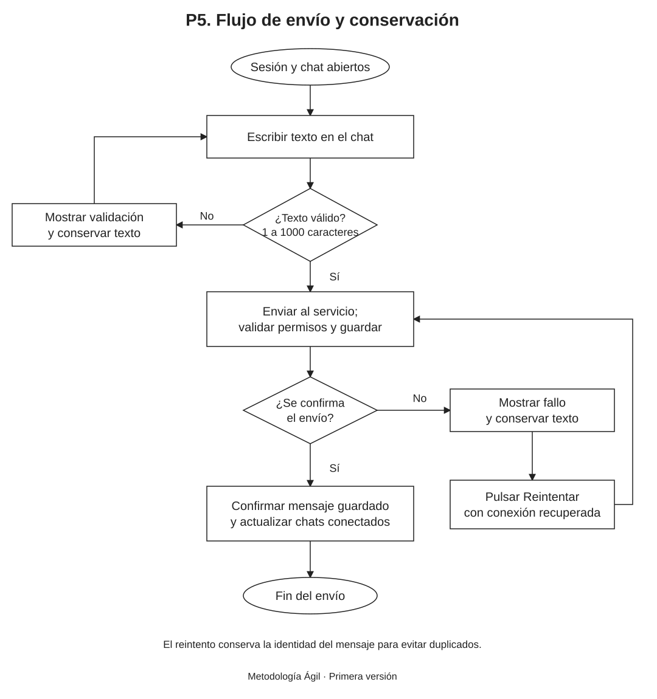

Propósito y alcance
La Especificación de Requisitos de Software (ERS) precisa las reglas de AzChat y las condiciones con las que se comprobará su primera versión. El sistema permite que estudiantes registrados intercambien mensajes privados de texto y consulten su historial desde una web adaptable al celular.
El alcance mantiene una conversación privada por pareja, un solo tipo de usuario y una meta de 30 personas simultáneas. No incluye grupos, archivos, audios, llamadas, administrador ni cifrado de extremo a extremo. La recuperación y el cambio de contraseña quedan fuera de esta primera versión.
Registro e identificación
| Dato | Regla |
|---|---|
| Nombre completo | Obligatorio. Registra los nombres y apellidos del titular. No se utiliza como identificador de ingreso ni se muestra en los mensajes. |
| Código de estudiante | Obligatorio, único y formado por exactamente 6 dígitos. Se conserva como texto para mantener posibles ceros iniciales. Es una alternativa al nombre de usuario para ingresar. |
| Nombre de usuario | Obligatorio y único. Entre 3 y 20 caracteres: letras, números y guion bajo; comienza con una letra. Se normaliza a minúsculas. El registro, el ingreso y la búsqueda no distinguen mayúsculas y minúsculas. |
| Contraseña | Obligatoria, de al menos 8 caracteres. Se comprueba sin guardar su texto original; únicamente se conserva un hash seguro. No se solicita correo electrónico ni teléfono. |
El código y el nombre de usuario identifican una cuenta de forma única. Al comenzar por una letra, el usuario no se confunde con un código numérico. El código se declara durante el registro; el alcance no incorpora una consulta al sistema de matrícula de una institución.
Comportamiento requerido
| Especificación | Comportamiento |
|---|---|
| ERS-01. Registro y acceso | Se validan todos los datos antes de crear la cuenta. Se rechazan códigos o usuarios ocupados. El ingreso acepta usuario o código junto con la contraseña. Un acceso incorrecto muestra un aviso y no permite consultar conversaciones. La sesión vence de forma absoluta a las 8 horas desde el ingreso; la actividad no amplía el plazo. RF-01, RF-02. |
| ERS-02. Destinatario y chat | La búsqueda usa el nombre de usuario completo, normalizado a minúsculas; no devuelve coincidencias parciales ni una lista general de estudiantes. El resultado identifica al destinatario mediante su usuario. Cada pareja de personas distintas tiene una única conversación: al repetir la búsqueda se abre la existente. RF-04. |
| ERS-03. Conversaciones propias | La lista contiene únicamente los chats en los que participa la cuenta activa. Una lista sin conversaciones se muestra como un estado vacío, no como un error. RF-07. |
| ERS-04. Envío de texto | Con sesión y chat abiertos, se admite un texto no vacío de hasta 1000 caracteres. Un texto formado solo por espacios se rechaza. La web y el servicio validan el contenido y los permisos. El mensaje se confirma como enviado después de quedar guardado. RF-05. |
| ERS-05. Recepción e identidad | Los participantes conectados reciben el mensaje sin recargar. La conversación y cada mensaje identifican al participante por su nombre de usuario. Los mensajes se presentan como texto; su contenido no ejecuta código. RF-03, RF-06. |
| ERS-06. Historial | Los mensajes confirmados permanecen guardados, con su emisor y fecha y hora. Al volver a entrar se consultan también los recibidos durante la ausencia. Se presentan en orden de envío, sin duplicados. No hay eliminación automática, edición ni borrado de mensajes en esta versión. RF-08. |
| ERS-07. Fallos y reintento | Ante un fallo se informa el estado y se conserva el texto en la página abierta. El reintento se realiza únicamente al pulsar un botón, con conexión recuperada; no existe reenvío automático. Si el mensaje ya se guardó y se perdió la confirmación, repetir el intento no debe crear otro mensaje. Un acceso vencido requiere iniciar sesión antes de continuar. RF-09. |
| ERS-08. Privacidad y salida | El servicio comprueba sesión y pertenencia al chat para las consultas y actualizaciones en directo. No basta con ocultar enlaces. Cerrar sesión invalida el acceso y las conexiones en directo de esa sesión y conserva los mensajes. El vencimiento también cierra su canal de actualizaciones. La búsqueda no expone las contraseñas, los códigos ni los nombres completos de otras cuentas. RNF-03, RNF-07. |
Flujo de envío y conservación

Modelo editable: Flujo_envio_AzChat.drawio. Puede abrirse en Draw.io mediante Archivo → Abrir desde → Dispositivo.
Criterios de aceptación
Los siguientes escenarios son condiciones de aceptación previstas. Su ejecución corresponde a la etapa de construcción; este documento no presenta resultados de un sistema implementado.
| Criterio | Procedimiento y resultado esperado |
|---|---|
| CA-01. Cuenta válida | Registrar nombre completo, código 012345, usuario alumno_01 y una contraseña de 8 o más caracteres. La cuenta se crea y mantiene el cero inicial del código. ERS-01. |
| CA-02. Registro inválido | Probar campos vacíos, códigos de 5 o 7 dígitos, usuarios de 2 o 21 caracteres, un usuario que comience por número, símbolos no permitidos o una contraseña de 7 caracteres. La cuenta no se crea. ERS-01. |
| CA-03. Unicidad | Intentar registrar el mismo código o un usuario ya registrado, incluso variando sus mayúsculas. Se rechaza el duplicado y no se modifica la cuenta existente. ERS-01. |
| CA-04. Inicio y cierre de sesión | Ingresar primero con usuario y luego con código, usando la contraseña correcta. Comprobar que una contraseña incorrecta no da acceso y que, después de cerrar sesión, el historial exige un nuevo ingreso. En un entorno de prueba, simular el vencimiento de las 8 horas y comprobar que se rechazan las peticiones y cesan las actualizaciones de esa sesión. ERS-01 y ERS-08. |
| CA-05. Búsqueda exacta | Buscar el usuario completo de otra cuenta y comprobar la coincidencia sin distinguir mayúsculas. Una búsqueda parcial o de un usuario inexistente no devuelve otro destinatario. ERS-02. |
| CA-06. Una conversación por pareja | Abrir un chat entre A y B. Buscar B desde A y A desde B de nuevo: ambos accesos abren la misma conversación y conservan el mismo historial. No se permite crear un chat consigo mismo. ERS-02. |
| CA-07. Límites del texto | Aceptar mensajes de 1 y 1000 caracteres. Rechazar texto vacío, solo espacios y 1001 caracteres. Comprobar que el rechazo también ocurre al omitir la validación de la interfaz. ERS-04. |
| CA-08. Recepción e identidad | Enviar un mensaje de A a B con ambos conectados. Aparece una sola vez en ambos chats, sin recargar, con el usuario de A. Un texto con etiquetas o código se muestra sin ejecutarlo. ERS-05. |
| CA-09. Historial conservado | Desconectar B, enviar mensajes desde A y volver a ingresar con B. Los mensajes anteriores y los recibidos durante la ausencia permanecen ordenados y sin duplicados. ERS-06. |
| CA-10. Aislamiento | Con una tercera cuenta C, intentar consultar o enviar mensajes al chat A–B y recibir sus eventos en directo. Todos esos accesos se rechazan. La búsqueda tampoco devuelve los datos privados del registro. ERS-08. |
| CA-11. Fallo y reintento manual | Interrumpir un envío. La interfaz informa el fallo, conserva el texto mientras la página siga abierta y no lo confirma. Al recuperar la conexión, solo reintenta al pulsar el botón. Simular una confirmación perdida después de guardar: el reintento conserva un único mensaje. ERS-07. |
| CA-12. Datos y credenciales | Reiniciar el servicio y volver a entrar: las cuentas y los mensajes confirmados permanecen. Revisar que las contraseñas almacenadas sean hashes y que ninguna respuesta de consulta exponga la contraseña ni su hash. RNF-05 y RNF-07. |
| CA-13. Capacidad y tiempo | Con 30 usuarios conectados en 15 parejas, durante 2 minutos cada usuario envía un texto válido cada 10 segundos. Con el servidor activo y conexión estable, cada mensaje aparece en el destinatario en un máximo de 3 segundos desde que se pulsa Enviar. No se pierden ni se duplican mensajes confirmados. Se registran los tiempos para comprobar el resultado. RNF-02. |
| CA-14. Lectura y controles | Comprobar el uso desde computadora y celular: campos, botones y mensajes legibles; navegación por teclado y controles accesibles sin desplazamiento horizontal de la página. RNF-01. |
Aplicación del enfoque Ágil
Los criterios se comprobarán en entregas pequeñas: primero registro y acceso, después conversaciones y finalmente mensajería e historial. La revisión de una entrega puede actualizar los requisitos y los modelos manteniendo su relación con P3 y P4.
Los componentes de construcción se especifican en P8 y su alojamiento en Render y Supabase se describe en P9. La capacidad y el tiempo de respuesta se verificarán mediante CA-13.
Equipo del proyecto
| Apellidos y nombres | Código |
|---|---|
| Apaza Quispe Antonio Vicente | 236876 |
| Arias Ramirez Alex | 236104 |
| Chura Chambilla Raul Cristian | 236567 |
| Escobedo Arapa Kenyi Blanca | 236171 |
| Mamani Pari Yimmy Jonathan | 237317 |
| Quispe Ramos Daniel Jhosimar | 236568 |
| Roque Mamani Vidman Ruis | 236232 |
| Vidal Fuentes Jordy Anthony | 236535 |